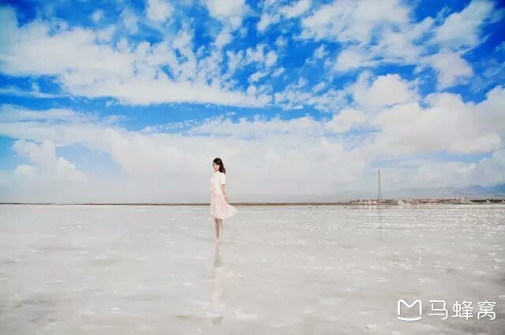
茶卡盐湖
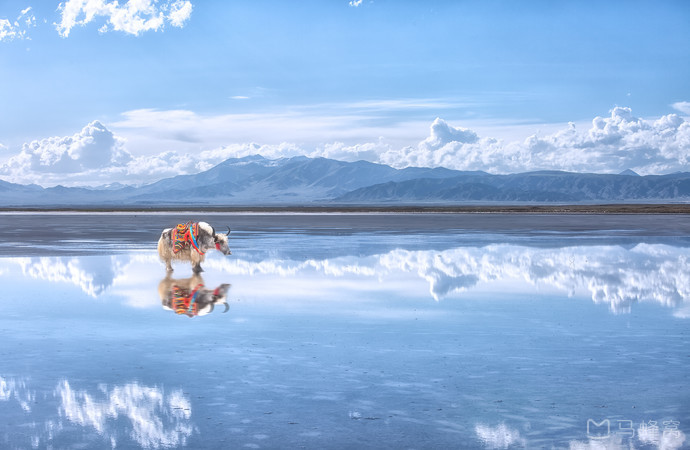
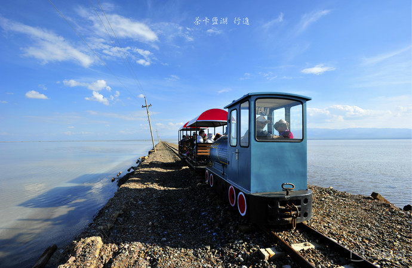
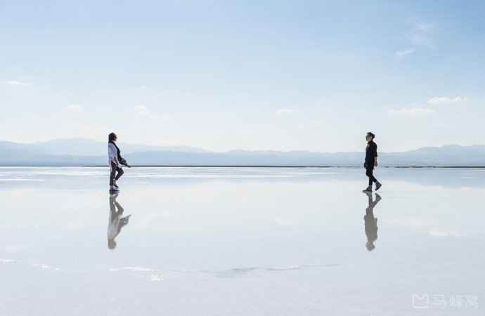
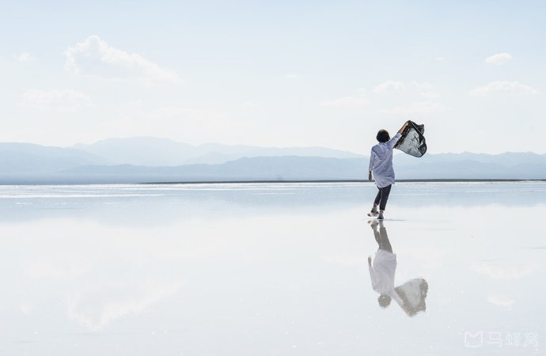
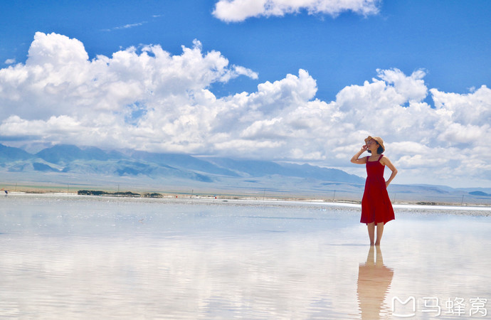
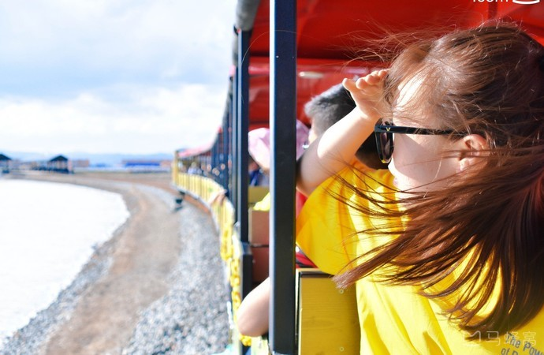
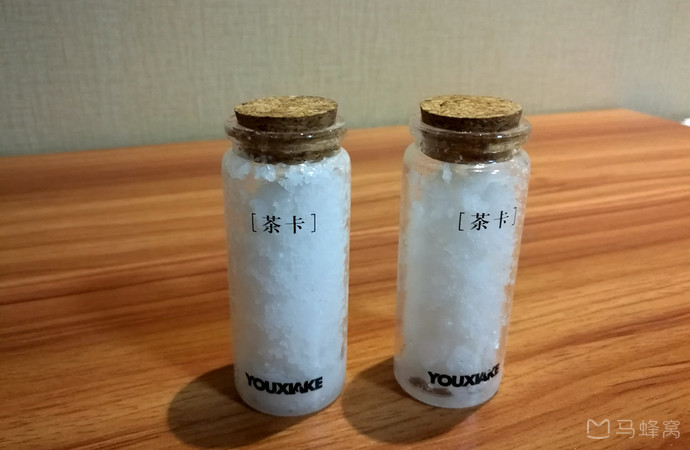
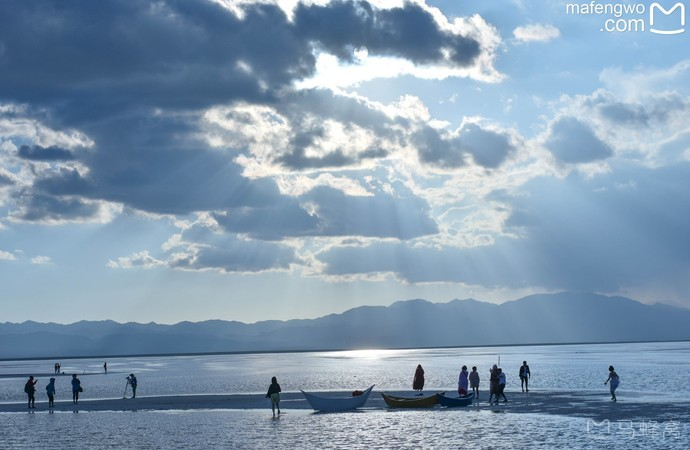
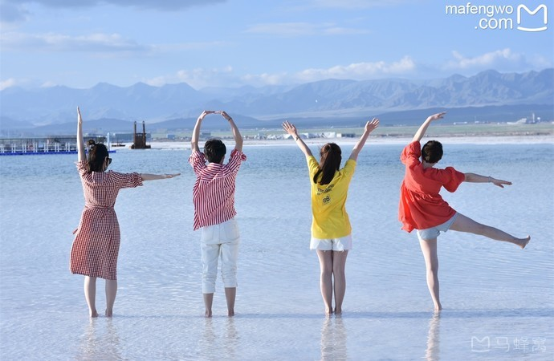
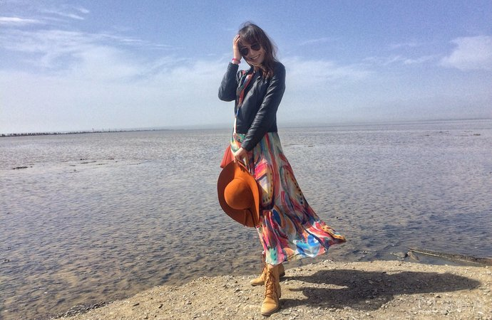
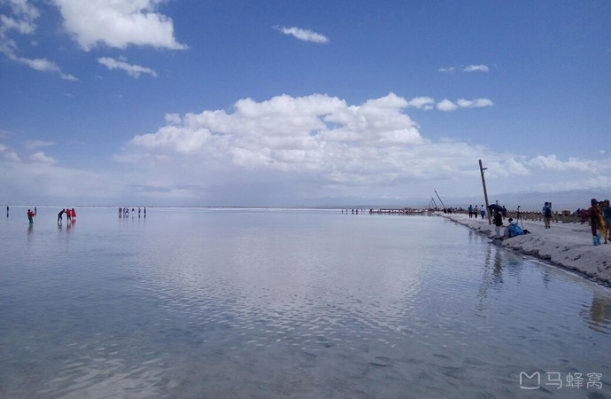
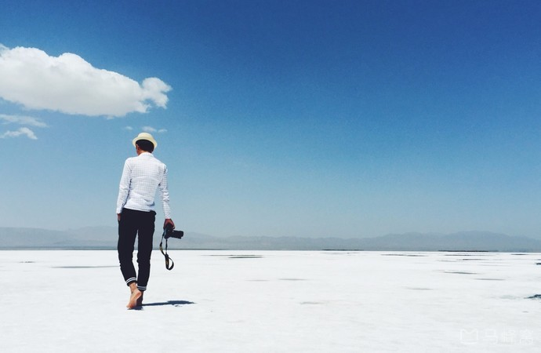
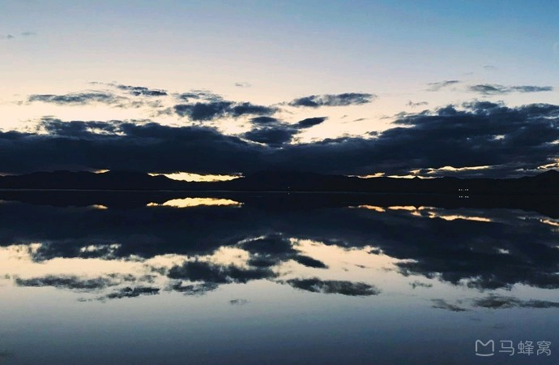
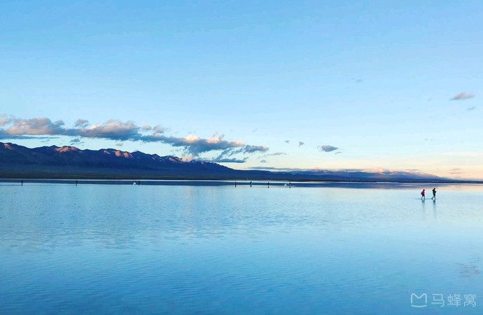
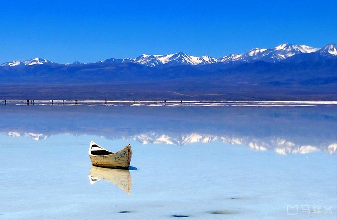
·茶卡盐湖是柴达木盆地有名的天然结晶盐湖，中国的“天空之镜”，盐产量可供全国人民使用约75年。
·景区里有众多的盐雕可以观赏，还可以乘坐小火车，到盐湖的深处观光。
·游客可以赤脚走到湖面上观看和拍摄自己的倒影，如果足够幸运，白天可以看到在这些河面上形成的海市蜃楼。
·若是连续几天阴雨，湖中的盐层可能会被稀释溶解掉，则会露出底下的泥地，不能下湖去玩。
·盐湖里很多小黑洞洞，其实是一个个的陷阱，千万别踩，而且越黑越危险。
真正风平浪静的倒影和身穿艳丽服饰的美女均在湖的深处，鞋是不能穿的，难道光着脚？我怕盐颗粒磕脚，还是去租一双防水靴吧，游客可以租景区提供的防水鞋，押金50租金5元，我穿上自带的拖鞋，再套上防水靴，呵呵，舒服！
最后是踩着网上买来的一次性雨鞋下了盐湖，还好挑选的雨鞋是透明色，不影响美观，在脚伸向盐湖的一瞬间雨鞋就进水了，踩起来湿哒哒的怪难受，但穿雨鞋的好处也瞬间显现出来，脚底不会被盐粒刮到疼，走起路来相对轻松些。
手捧白花花的盐，才真实得感受到盐湖的魅力，盐粒有点类似未加工的粗盐，却比平时见到的粗盐雪白不少，雪白中夹杂着晶莹剔透，捧在手心很舒服，然而撒手想把盐粒拍干净就没那么简单了，停留在皮肤上的盐粒会快速被风干，必须一点一点用湿布擦掉才行。
湿纸巾
一次性防水雨鞋
可租防水雨靴，不过会漏水，可以内部穿拖鞋
乘坐小火车进入景区的开始，就有一股臭味，一个小车间的人说是盐水味，我倒不以为然。到湖中央后，需要租鞋套才能下湖，带相机的同学一定要好好保护相机，摸过盐水的手就不要再碰相机了，会腐蚀机身。
对了，需要提醒一句，有的鞋套会漏水。。非常尴尬，我们就是那个“有的”。。还好里面穿着拖鞋，方便着呢，记住不要踩黑色的盐坑！最好随身携带湿巾，从湖中上来一定要用湿巾好好擦拭，不然会对皮肤不好。
听我一声劝，在茶卡盐湖，直接坐小火车到最里面吧！（小火车只收现金）里面的景色最好，也是最能拍出效果的地方！然后就脱下你的袜子，脱掉你的外套，一咬牙，下水去感受冰冷的水，硌脚的结晶盐！当天如果天气晴朗，拍出的照片真的十分好看！如果天气是阴沉的，也不要慌，高能的滤镜总有一个适合你！
当时的我，捞起了我的秋裤，披着我的红色流苏小围巾，就算感着冒，也坚强地下水了！请相信，凹造型中的女生，是不会被打败的，不论是疾病，还是阴沉的天气，也无法阻止我想要拍出美美照片的心！

用一个字形容，大！从景区正门走到可以下水的地方，单程基本就是30分钟以上，加上高原太阳暴晒，体力不好的一定要买短驳+小火车，还有带好伞！
如果步行的话是基本没精力走到最里面的，过了盐湖里第一个火车站点不久，就能下盐湖了，如果要拍没人的照片就往湖里就多走点。
进盐湖一定要小心安全，盐湖内有很多坑，如果踩下去就危险了，大家一定要看着路走。所以去盐湖建议穿拖鞋，这样相对方便点，还有洗脚的地方
茶卡盐湖是固液并存的卤水湖，镶嵌在雪山草地间而非戈壁沙漠上。盐湖水域宽广，银波粼粼。天空白云悠悠，远处苍山峥嵘，蓝天白云、雪山映入湖中，如诗如画。四周牧草如茵，羊群似珍珠洒落。漫步湖上，犹如进入盐的世界。
Tips：
1、 游玩茶卡盐湖前最好准备一些湿纸巾，皮肤沾上盐粒或者盐水后要用淡水清洗或用纸巾擦掉，时间稍长，会对皮肤造成一定的损伤。
2、这里晴天时光线很强，而且还有湖面的反射，都需要防晒准备，而且最好准备一副墨镜保护眼睛。
3、景区里不能吃饭，购物也不太方便，所以最好自备饮用水和干粮进入。
4、 由于盐层比较粗糙，赤脚走路时会有些痛，而且湖内深处淤泥较深，所以不建议走的太深，盐湖里面有很多地方已经融化，成为水面，进入景区为了游玩拍照方便最好穿拖鞋或者凉鞋，准备鞋套或者塑料
太阳非常刺眼，基本上我是离不开墨镜和帽子的了。由于这几年游客增多，茶卡盐湖近一点的地方都已是脏乱差了，为了拍摄到最美的茶卡，我们一直走到最后一个栈道才决定下湖。景区明文规定不能穿鞋套下湖，可是还是有很多人违反规定。老王说，规矩是约束内心的。我们穿着凉鞋下湖，那是指压板的疼痛，走一步就会有颗粒大小的盐进脚，痛到不能呼吸。
白茫茫的一片盐湖，全是人！同伴这回是挺拼的，鼓励大家勇往直前，我们两两成对，一直走到没有人的地方才停住。然后就是尽情的凹造型了，头顶太阳，脚踩白盐的作品，希望还能入大家的眼。
累到没有一丝力气，返程没有火车票可以购买了，咬牙坚持徒步到天空之境广场，排队等候电瓶车（肉嫩的妹子带上创口贴，我光荣负伤了）。景区出门四一条长长的商业链，如需购买纪念品或者西瓜解馋，这时就需要货比三家了，最近的永远是最贵的。
大红色和茶卡盐湖绝配
五、茶卡盐湖适合什么季节来，而且可以拍出大片？
因为青海基本是除了冬季就是夏季，剩下的就是类似于冬季和类似于夏季，单说什么季节来茶卡盐湖等其他景点玩的话，有点不准确，另外光照、天气、拍摄道具等都是影响因素。
茶卡盐湖出大片，一般需要几个条件：
第一，适合的月份，青海地表解冻基本是在4月，每年4月一直到11月前，都是可以来茶卡盐湖的。冬季来的话，白茫茫的，上午或者傍晚也能拍照，就是风大了很多。
第二，适合的天气，不管是78月来还是其他时候来，天气不好，可能就是山水丹青画，出片的效果不是很明显。
第三，适合的光照，中午阳光直射，太刺眼，上午、傍晚、晴朗的晚上，都是最好的选择。
第四，适当的微风，风不能太大，不然波光粼粼，倒影效果差很多。
第五，适合的水量，出面如镜子般的效果，水波纹要少，盐湖水面要浅，没过小腿甚至是膝盖的，那就是淤泥了，人也是东倒西歪的，刚刚没过脚面的水是最好的。
另外从光学角度来说，不是最佳的镜面倒影效果。这个因素只能期待景区解决了，曾经还设想景区弄几个抽水泵，但可能具体不好操作吧，本人也就没和景区负责人联系。
以上主要各个因素都会影响盐湖的拍照效果，另外还有湿度温度、人多人少的的影响，人多的时候，如果有航拍机的话，肯定出大片呢。
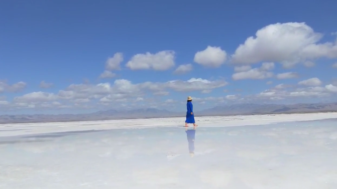